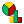
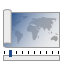

Tvorba kartodiagramů¶
Záložka Diagramy¶
{kind=link}
Kromě přípravy dat pro mapové výstupy pomocí základní symbologie, lze na základě hodnot atributů jednotlivých prvků vytvářet také diagramy. K tomu slouží záložka Diagramy ve vlastnostech vektorové vrstvy.
Obr. 145 Okno nastavení diagramů.¶
V první řadě musíme z rolovací nabídky vybrat typ diagramu. Na výběr máme ze 3 typů:
|pruhovy| Skládané pruhy
{kind=link}
{kind=link}
{kind=link}
Poté je nutné pomocí tlačítek  a
a  vybrat ze
seznamu jeden či více atributů, které chceme do diagramů přiřadit resp.
odebrat. Atributy lze hromadně označit pomocí káves Ctrl a Shift
a také jednotlivě přidávat poklikáním. Pomocí tlačítka je
možné definovat atribut založený na výrazu. Poklikáním na již přiřazené
atributy, můžeme editovat jejich požadované vlastnosti – nadefinovat výraz,
změnit barvu a popisek legendy.
vybrat ze
seznamu jeden či více atributů, které chceme do diagramů přiřadit resp.
odebrat. Atributy lze hromadně označit pomocí káves Ctrl a Shift
a také jednotlivě přidávat poklikáním. Pomocí tlačítka je
možné definovat atribut založený na výrazu. Poklikáním na již přiřazené
atributy, můžeme editovat jejich požadované vlastnosti – nadefinovat výraz,
změnit barvu a popisek legendy.
{kind=link}
Obr. 146 Výběr atributů zobrazovaných v diagramech.¶
Kromě volby atributů můžeme v dalších záložkách měnit základní parametry vzhledu, velikosti, umístění atd. U možností Výsečový diagram a Textový diagram můžeme rovnou použít přednastavené hodnoty, při použití Histogram je nutné nastavit alespoň atribut pro výpočet velikosti sloupečků. Ve všech třech případech je však pro lepší vzhled a interpretaci dat vhodné vlastnosti poupravit. Práce s nastavením vlastností je intuitivní a až na malé odchylky u všech typů stejná.
Za zmínku stojí záložka Velikost kde můžeme zvolit buď velikost pevnou, nebo velikost diagramu škálovat na základě atributu nebo výrazu (pokud potřebujeme stanovit velikostní kategorie, je tento přístup trochu komplikovanější). U zobrazení histogramu se škálování týká velikosti sloupečků a je nutné ho nastavit.
{kind=link}
Obr. 147 Nastavení velikosti diagramů.¶
Pracovat s umístěním diagramů je možné pomocí nastavení v záložce Umístění, které funguje podobně jako umisťování popisků. Nejdůležitější však je, že pozice může být upravována manuálně pomocí panelu. Nastavení se může ukládat buď do dané vrstvy jako nové atributy, nebo je možné je ukládat do souborové databázy daného projektu.
Obr. 148 Nastavení umísťování diagramů.¶

Obr. 149 Nástroje pro interaktivní umísťování popisků.¶
Pokud potřebujeme vygenerovat legendu pro diagram, tak je zapotřebí nastavit víc detailů. Prvním je nastavení korektních popisků v záložce Atributy. To nám zaručí korektní vykreselní barevného symbolu a správného popisku v legendě. Pokud používáme nastavení velikosti, tak je vhodné do legendy uvést také rozměrové symboly pro porovnání se symboly použitými v mapovém okně. Toto nastavení je dostupné v záložce Legenda pod tlačítkem Data-defined Size Legend.
Obr. 150 Nastavení legendy velikosti symbolů grafu pro mapový výstup.¶
Pro finální mapový výstup je však možné vytvořit sofistikovanější legendu v grafickém (Gimp) nebo vektorovém (Inkscape) editoru.
Obr. 151 Automaticky generovaná legenda s definicí velikosti.¶
Příklady tvorby kartodiagramů¶
Výsečový diagram¶
Obr. 152 Podíl dálnic, silnic I. a II. třídy v krajích.¶
Textový diagram¶
Obr. 153 Délka dálnic, silnic I. a II. třídy v krajích.¶
Obr. 154 Součet délky dálnic v krajích.¶
Obr. 155 Součet délky dálnic v krajích.¶
Histogram¶
Obr. 156 Podíl dálnic, silnic I. a II. třídy v krajích.¶
Další příklady využití QGIS v tematické kartografii¶
Použití stylu vrstvy¶
Jednoduché kartogramy se škálováním velikosti podle jednoho atributu lze vytvořit pomocí odstupňovaného stylu bodové vrstvy, kde lze zvolit metodu odstupňování pro velikost. Takovou vrstvu si můžeme z polygonové vrstvy vytvořit například vygenerováním centroidů ( Centroidy…). Výhodou je, že můžeme pohodlně definovat jednotlivé kategorie a vygeneruje se nám odpovídající legenda.
{kind=link}
Obr. 157 Nastavení stylu bodové vrstvy.¶
Obr. 158 Součet délky dálnic v krajích.¶
Použití pluginu cartogram3¶
Pomocí pluginu Cartogram lze vytvořit geografickou anamorfózu, kdy se rozloha polygonu deformuje na základě daného atributu.
Obr. 159 Anamorfóza na základě celkové kriminality v krajích.¶
Zobrazení dat ve 3D na základě charakteristiky¶
Vyobrazit kvalitativní nebo kvantitativní charakteristiku pomocí 3D zobrazení je častým způsobem vyjádřování. Díky nativnímu zobrazování ve 3D mapovém okně se dá toto jednoduše zobrazit.
Vykreslování prvků ve 3D prozatím není propojené se standardní symbologii a prozatím ani nenabízí odpovídající možnosti. V záložce 3D Pohled je možné nastavit zdroj generování „výšky objektů“, tzv. extruze. V našem případě využijeme napojení na existující sloupec, který obsahuje hodnoty pro jednotlivé prvky dané vrstvy. (vrstva vusc_krim, atribut krim_2015c). Ostatní nastavení již záleží na požadavcích uživatele.